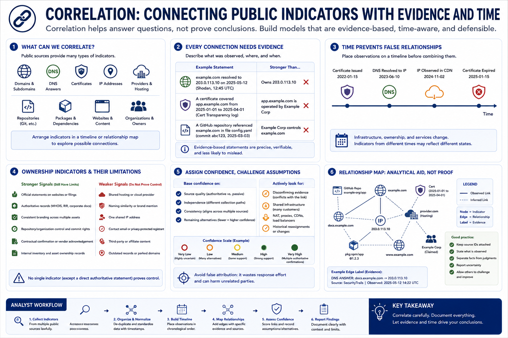

Correlation and Relationship Mapping
Connecting to LMS... Progress: in progress

Narration
Correlation connects indicators from different public sources to understand possible relationships. Domains, subdomains, DNS answers, certificates, internet addresses, providers, repositories, packages, websites, and organizations can be arranged in a timeline or relationship map.
Every connection should describe its evidence. A domain resolved to an address on a date. A certificate covered a hostname during a validity period. A repository referenced a domain in a file. These statements are stronger than a vague line suggesting ownership.
Time prevents false relationships. An address can be reassigned, a certificate can expire, and a vendor can change. Place observations on a timeline before combining them. Two indicators observed years apart may not describe the same operational state.
Ownership indicators include official statements, authoritative records, consistent branding, repository control, contractual confirmation, and internal inventory. Each has limitations. Hosting, naming similarity, or one shared provider rarely proves common control.
Assign confidence based on source quality, independence, consistency, and remaining alternatives. Look for disconfirming evidence and shared-infrastructure explanations. Avoid false attribution, which can waste response effort and harm unrelated parties.
A relationship map is an analytical aid, not proof by appearance. Keep source identifiers attached to nodes and edges, distinguish observed facts from judgments, and report uncertainty so reviewers can challenge or update the model.